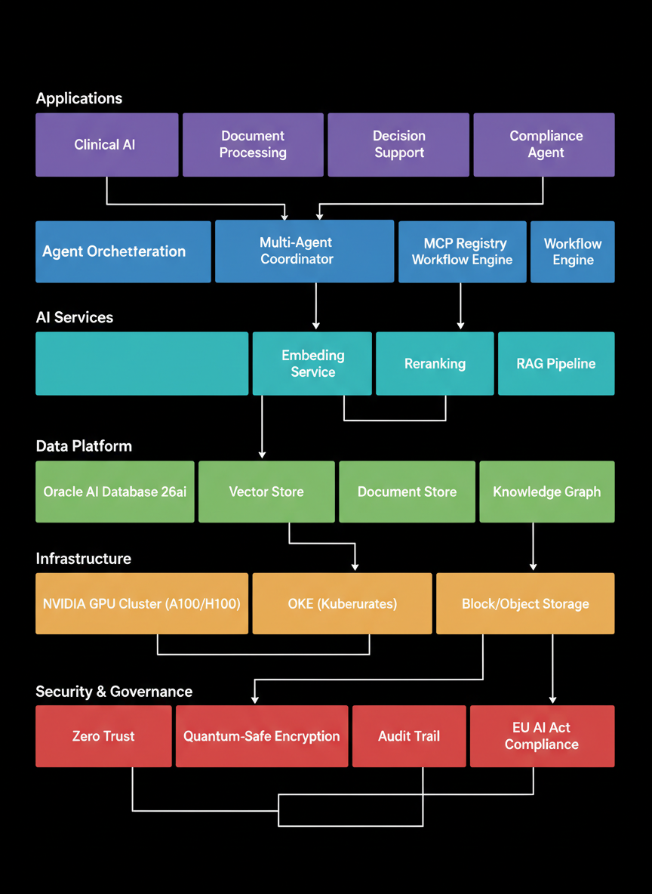

Sovereign AI &
The Private Agent Factory
The next frontier in enterprise AI isn't more powerful models—it's where those models run. Sovereign AI ensures AI workloads execute within national borders, on controlled infrastructure, under local regulatory frameworks. The Private Agent Factory is the architectural pattern that makes multi-agent AI systems deployable in air-gapped, regulation-compliant environments.
Why Sovereign AI Matters Now
The global AI landscape in 2026 is defined by a fundamental tension: enterprises need the most powerful AI models, but regulations increasingly demand that data and computation remain within national borders. The EU AI Act (fully enforceable from August 2025), combined with GDPR Article 44's data transfer restrictions, creates a regulatory environment where sending enterprise data to US-based LLM APIs may constitute a compliance violation.
This isn't hypothetical. Healthcare organizations processing patient data under HIPAA and GDPR simultaneously cannot legally send that data to an API hosted in a different jurisdiction without adequate safeguards. Financial institutions under MiFID II face similar constraints. Defense and government agencies have even stricter requirements—many operate in fully air-gapped environments where no external network connectivity exists.
Gartner predicts that by 2027, over 70% of enterprises will adopt sovereign cloud strategies for AI workloads, up from approximately 25% in 2025. The driver isn't just compliance—it's competitive advantage. Organizations that can run AI where their data lives, without moving it across borders, gain both speed (zero network latency) and trust (complete audit trail of data access).
The Regulatory Landscape
| Regulation | Scope | AI Impact | Enforcement |
|---|---|---|---|
| EU AI Act | All AI systems in EU market | Risk classification, transparency, human oversight | Aug 2025 (phased) |
| GDPR Art. 44 | Personal data of EU residents | Prohibits transfer to non-adequate countries without safeguards | Active, fines up to 4% revenue |
| DORA | Financial sector (EU) | ICT risk management, third-party dependencies | Jan 2025 |
| NIS2 Directive | Critical infrastructure (EU) | Supply chain security, incident reporting | Oct 2024 |
| HIPAA + HITECH | Healthcare (US) | PHI cannot leave controlled environments | Active |
The Private Agent Factory Pattern
The Private Agent Factory is an architectural pattern for deploying multi-agent AI systems entirely within private infrastructure. The core principle: every component of the AI stack—models, embeddings, vector stores, agent orchestration, tool access—runs on infrastructure you control, with zero dependency on external APIs for inference.
The Three Security Zones
Network isolation, encryption at rest and in transit, identity management. All traffic encrypted with quantum-resistant algorithms. Zero-trust: every request authenticated, every action logged.
Compute, storage, networking, and AI infrastructure. GPU clusters for model serving, container orchestration, private registries. No shared tenancy—dedicated hardware with verified supply chain.
Multi-agent orchestration within the secure perimeter. Agents communicate via MCP protocol. Models served via vLLM on local GPUs. No external model API calls.
Novel pattern: Package the entire multi-agent system—orchestrator, specialist agents, models, vector store, MCP server—as a single deployable unit (Helm chart + OCI AI Blueprints). This "Agent Factory in a Box" can be deployed identically across OCI Dedicated Region, on-premises Exadata, or air-gapped defense environments. The deployment target changes; the agent architecture doesn't. This enables enterprises to develop agents in a cloud sandbox and deploy to sovereign infrastructure with zero code changes.
Air-Gapped LLM Deployment
Air-gapped environments—networks with no external connectivity—represent the most extreme sovereign AI requirement. Defense agencies, nuclear facilities, financial trading systems, and classified healthcare research operate in air-gapped conditions. Running AI in these environments requires self-contained model serving with zero internet dependency.
Self-Hosted Model Stack
| Component | Technology | Role |
|---|---|---|
| LLM Serving | vLLM on NVIDIA A100/H100 | High-throughput inference for Llama 3.3 70B, Llama 4 Maverick |
| Embedding | Cohere Embed on Dedicated AI Cluster | Text + image embeddings for RAG |
| Reranking | Cohere Rerank 3.5 (self-hosted) | Retrieval quality optimization |
| Vector Store | Oracle AI Database 26ai | HNSW/IVF indexes with ACID guarantees |
| Orchestration | OKE + Kubernetes | Container orchestration, auto-scaling |
| Monitoring | Prometheus + Grafana (internal) | Observability without external telemetry |
OCI AI Blueprints transforms
GPU onboarding from weeks to minutes. For sovereign deployments, the key feature is the air-gapped deployment
mode: all container images, model weights, and configuration are pre-loaded into a private registry.
The entire stack deploys from internal sources with egress: none enforced at the network level.
OCI Dedicated Region & Oracle Alloy
OCI Dedicated Region brings the full Oracle Cloud Infrastructure stack—including GenAI Service, AI Blueprints, and Database 26ai—into a customer's own data center. This isn't a private cloud compromise; it's the complete OCI control plane running on dedicated hardware behind the customer's firewall.
Oracle Alloy extends this further, allowing partners (telcos, system integrators, sovereign cloud providers) to build their own cloud services on OCI infrastructure. This creates a sovereign cloud ecosystem where local providers can offer AI services that comply with national regulations while leveraging Oracle's global R&D investment.
Deployment Models Compared
| Model | Data Residency | Control | Best For |
|---|---|---|---|
| OCI Public Region | Region-specific (EU available) | Shared infrastructure, OCI-managed | Standard enterprise workloads |
| OCI Dedicated Region | Customer data center | Dedicated hardware, customer facility | Healthcare, finance, defense |
| Oracle Alloy | Partner-controlled | Partner-branded, Oracle infrastructure | Sovereign cloud providers, telcos |
| Oracle Exadata@Customer | Customer data center | Oracle-managed DB, customer facility | DB-native AI only, no full cloud |
EU AI Act: Compliance Architecture
The EU AI Act introduces a risk-based classification for AI systems. For enterprise AI deployments, the key categories are High-Risk (healthcare, financial, HR, law enforcement) and Limited Risk (chatbots, content generation). High-risk systems require conformity assessments, human oversight mechanisms, and complete audit trails.
Compliance Requirements by Risk Level
| Requirement | High-Risk | Limited Risk | Sovereign AI Solution |
|---|---|---|---|
| Risk assessment | Mandatory, documented | Recommended | Automated risk scoring in agent orchestrator |
| Data governance | Full lineage, quality controls | Basic records | Oracle Data Safe + DB audit trail |
| Human oversight | Human-in-the-loop mandatory | Transparency notice | Approval workflows in agent factory |
| Transparency | Explainable decisions, audit trail | Disclosure of AI use | Decision audit log + explanation generation |
| Security | Robustness, adversarial testing | Standard security | Zero-trust + quantum-safe encryption |
Novel pattern: In the Private Agent Factory, the Compliance Agent is not an afterthought bolted onto the orchestration layer—it's a first-class participant in every agent interaction. Every request passes through the Compliance Agent before reaching specialist agents. It evaluates: (1) Is this request permissible under the configured regulations? (2) What risk level does the response carry? (3) Does this require human approval? (4) What must be logged for the audit trail? This turns compliance from a post-hoc review process into a real-time governance layer embedded in the agent mesh.
GPU Sovereignty: The NVIDIA Partnership
Sovereign AI requires sovereign compute. NVIDIA's sovereign AI program enables nations and enterprises to own their AI compute infrastructure rather than renting it from hyperscalers. In partnership with OCI, this means Dedicated AI Clusters with NVIDIA A100 and H100 GPUs that run exclusively for a single customer, in a specific geographic location, with no shared tenancy.
The practical impact: a hospital can run Llama 4 Maverick on dedicated H100 GPUs in their own data center, serve patient queries through an in-database Select AI Agent, and guarantee that no patient data ever leaves their physical premises. The entire AI stack—model weights to vector indexes to agent decisions—operates within a single security perimeter.
Implementation Timeline
Infrastructure provisioning. Deploy OCI Dedicated Region or provision Dedicated AI Cluster. Configure private networking, HSM keys, and zero-trust policies.
Model deployment. Load model weights into private registry. Deploy vLLM serving infrastructure via OCI AI Blueprints. Validate inference quality.
Agent factory setup. Configure agent orchestrator, specialist agents, and MCP server. Deploy Oracle AI Database 26ai with vector indexes. Connect RAG pipeline.
Compliance integration. Configure Compliance Agent rules, audit logging, human oversight workflows. Run conformity assessment for EU AI Act classification.
Testing and hardening. Adversarial testing, penetration testing, failover validation. Document for regulatory submission.
Sources & References
- EU AI Act Full Text — artificialintelligenceact.eu
- GDPR Article 44: Transfer of Personal Data — gdpr-info.eu
- OCI Dedicated Region — oracle.com/dedicated-region
- Oracle Alloy — oracle.com/cloud/alloy
- NVIDIA Sovereign AI — nvidia.com/sovereign-ai
- OCI AI Blueprints — github.com/oracle-quickstart/oci-ai-blueprints
- Gartner: Sovereign Cloud Forecast 2027 — Gartner Research, "Predicts 2026: Cloud Computing"
- DORA (Digital Operational Resilience Act) — eur-lex.europa.eu
- NIS2 Directive — digital-strategy.ec.europa.eu
- Oracle Data Safe — oracle.com/data-safe
- Oracle OCI Pricing — oracle.com/cloud/price-list (always verify current pricing)